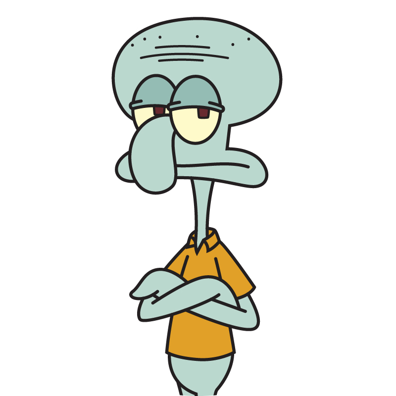

Profile |
About Me |
Projects |
Contact |
|
 |
Hi, My name is SquidWard J.Q. TentaclesEven though my name contains the word "squid," he is an octopus, not a squid. I have the traits of an octopus—a round bulbous head and rectangular pupils—while a squid has a long triangular head and circular eyes, unlike me. Squids have ten limbs, many more than I do. The series' animators believed that giving me eight limbs would be too burdensome and difficult to animate, which is why I am usually depicted with six limbs. Notable exceptions are brief scenes in "Pressure" and "Sold!," in which I has a full set of eight legs. In "Feral Friends," I'm exact species is identified: a giant Pacific octopus. Website: squid.com Email: Squid@ukham.com |
|---|
© 2022 SquidBoy